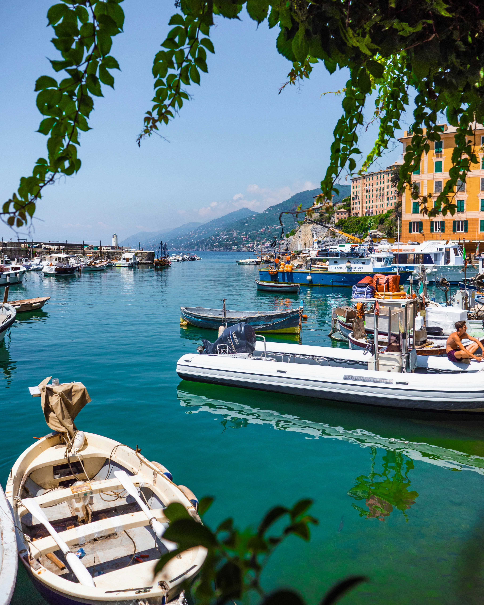

Italy
From sun-drenched Amalfi coastlines to pasta-fueled piazza nights in Rome, Italy is a summer love affair waiting to happen. Wander through Tuscan vineyards, get lost in Venice’s winding canals, or dive into the turquoise waters of Sardinia. Sip limoncello at golden hour, savor every bite of handmade pasta, and embrace the effortless charm of la dolce vita — where every moment feels like a scene from a classic film.